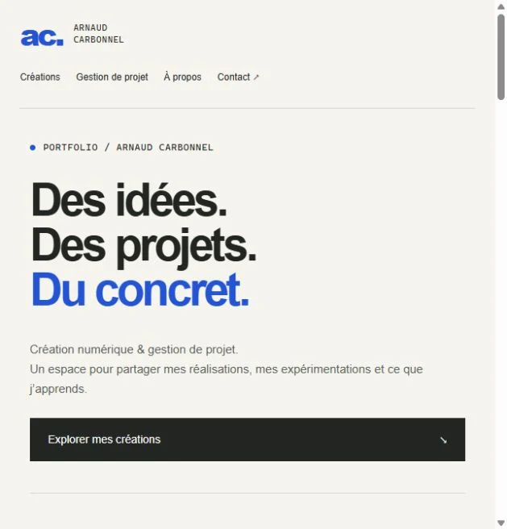

HTML · CSS · Projet personnel
Mon portfolio web
Apprendre à construire un site en code pour partager mes créations et raconter mes projets.
- Format
- Site web personnel
- Technologies
- HTML et CSS
- Statut
- En cours de création

01 / COMPRENDRE LE BESOIN
Contexte et objectif
Ce portfolio accompagne ma recherche d’emploi et mon apprentissage du développement web. Je souhaitais renouveler mon ancien site avec une réalisation dont je puisse comprendre et modifier le code. L’objectif est de présenter mes créations, mes expériences de gestion de projet, mes contributions à la recherche et mes explorations dans un ensemble cohérent, tout en apprenant les bases de sa construction.
Le site est organisé en trois niveaux : une page d’accueil, des rubriques et une fiche détaillée par projet. Chaque carte donne un premier aperçu grâce à une image, un titre et une phrase, puis ouvre un récit plus complet. Cette structure permet d’ajouter progressivement des réalisations et de présenter davantage de contexte sans surcharger les pages de rubrique.
02 / PASSER À LA RÉALISATION
La réalisation
Le site utilise des fichiers HTML pour le contenu et une feuille CSS commune pour la présentation. Les liens assurent la navigation entre les pages ; aucun framework n’est nécessaire pour cette version. Les fiches rassemblent des informations courtes, des sections de récit, des images et, lorsque cela apporte quelque chose, des vidéos. Une rubrique Recherche donne également accès à un article scientifique en PDF.
La présentation s’adapte à la largeur de l’écran : les cartes passent de plusieurs colonnes à une seule sur mobile, le menu peut revenir à la ligne et le contenu des fiches se réorganise. Les images ont été préparées dans un format plus léger, et les vidéos démarrent à la demande. Ces choix permettent de travailler à la fois sur la structure, la lisibilité et l’accès aux contenus.
03 / MA PLACE DANS LE PROJET
Ma contribution
Je construis ce portfolio avec l’accompagnement de Codex, dans une démarche d’apprentissage. Je définis les rubriques, sélectionne les projets, apporte les documents et précise mes contributions. Je participe aussi aux choix de présentation et aux corrections des textes. Le code est préparé et commenté avec cette aide pour que je puisse le relire, le comprendre et le modifier progressivement.
Le travail se fait par étapes : commencer par une page, organiser plusieurs rubriques, ajouter les fiches puis enrichir leur contenu à partir de mes rapports et de mes médias. Un guide explique la structure des fichiers et propose des exercices ciblés, comme modifier une phrase ou ajouter une carte. Cette démarche rend visibles à la fois le résultat du site et le chemin d’apprentissage qui l’accompagne.
04 / PRENDRE DU RECUL
Résultats et suite
La version actuelle rassemble quatre rubriques et neuf fiches, avec une navigation entre les cartes et les projets, des illustrations, des vidéos et un accès à la publication. Elle reste enregistrée localement pendant sa préparation. Les améliorations portent sur la qualité des récits, la sélection des médias et la vérification de la lecture sur différentes tailles d’écran.
La suite du projet consiste à relire le code bloc par bloc, compléter les informations encore manquantes et préparer l’hébergement. La mise en ligne permettra de partager une adresse avec des recruteurs et de consulter le site depuis un téléphone. L’apprentissage de Git et la gestion des mises à jour font également partie des prochaines étapes.